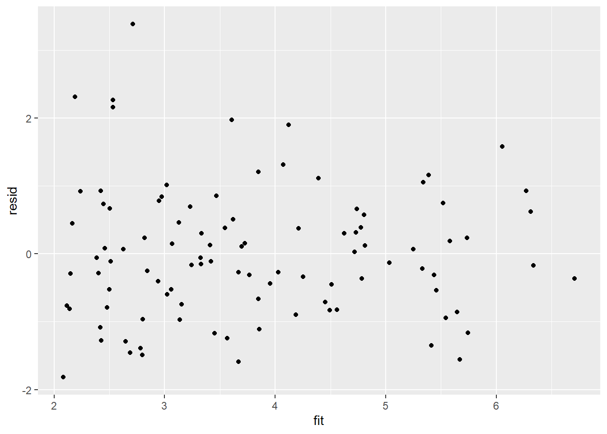
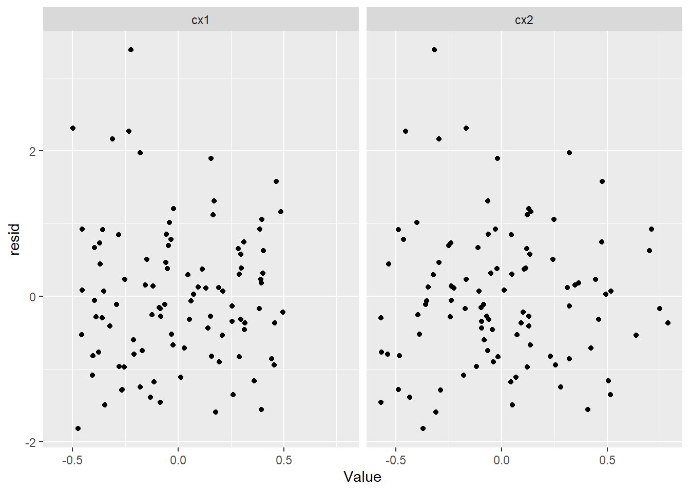
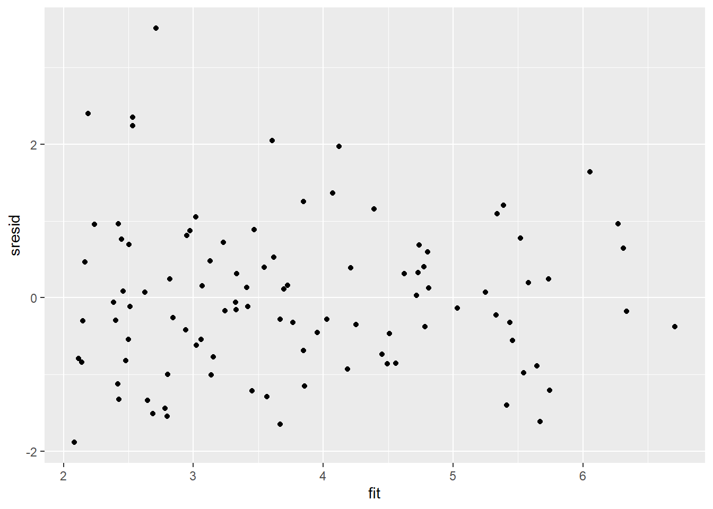
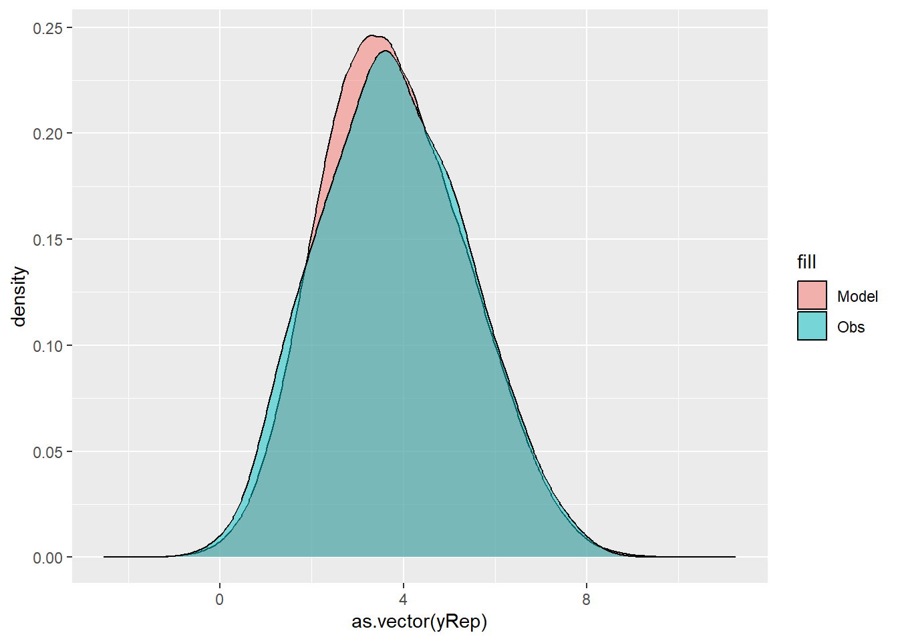
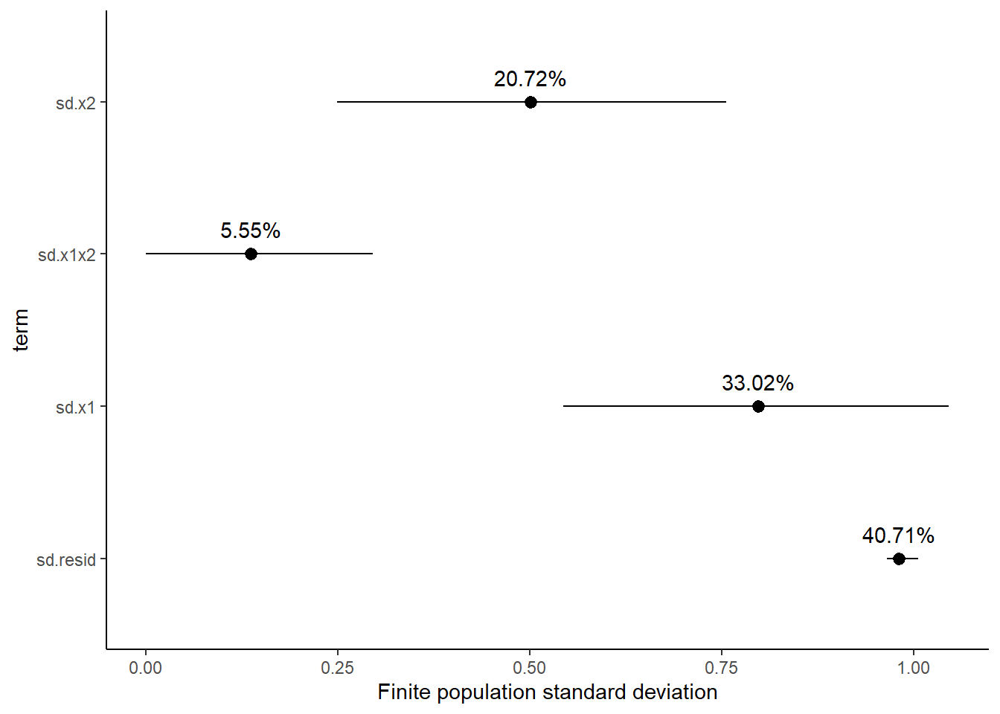

This tutorial will focus on the use of Bayesian estimation to fit simple linear regression models …
Keywords
Software, Statistics, Stan
This tutorial will focus on the use of Bayesian estimation to fit simple linear regression models. BUGS (Bayesian inference Using Gibbs Sampling) is an algorithm and supporting language (resembling R) dedicated to performing the Gibbs sampling implementation of Markov Chain Monte Carlo (MCMC) method. Dialects of the BUGS language are implemented within three main projects:
OpenBUGS - written in component pascal.
JAGS - (Just Another Gibbs Sampler) - written in C++.
STAN - a dedicated Bayesian modelling framework written in C++ and implementing Hamiltonian MCMC samplers.
Whilst the above programs can be used stand-alone, they do offer the rich data pre-processing and graphical capabilities of R, and thus, they are best accessed from within R itself. As such there are multiple packages devoted to interfacing with the various software implementations:
R2OpenBUGS - interfaces with OpenBUGS
R2jags - interfaces with JAGS
rstan - interfaces with STAN
This tutorial will demonstrate how to fit models in JAGS (Plummer (2004)) using the package R2jags (Su et al. (2015)) as interface, which also requires to load some other packages.
Overview
Introduction
Multiple regression is an extension of simple linear regression whereby a response variable is modelled against a linear combination of two or more simultaneously measured predictor variables. There are two main purposes of multiple linear regression:
To develop a better predictive model (equation) than is possible from models based on single independent variables.
To investigate the relative individual effects of each of the multiple independent variables above and beyond (standardised across) the effects of the other variables.
Although the relationship between response variable and the additive effect of all the predictor variables is represented overall by a single multidimensional plane (surface), the individual effects of each of the predictor variables on the response variable (standardised across the other variables) can be depicted by single partial regression lines. The slope of any single partial regression line (partial regression slope) thereby represents the rate of change or effect of that specific predictor variable (holding all the other predictor variables constant to their respective mean values) on the response variable. In essence, it is the effect of one predictor variable at one specific level (the means) of all the other predictor variables (i.e. when each of the other predictors are set to their averages).
Multiple regression models can be constructed additively (containing only the predictor variables themselves) or in a multiplicative design (which incorporate interactions between predictor variables in addition to the predictor variables themselves). Multiplicative models are used primarily for testing inferences about the effects of various predictor variables and their interactions on the response variable. Additive models by contrast are used for generating predictive models and estimating the relative importance of individual predictor variables more so than hypothesis testing.
where \(\beta_0\) is the population \(y\)-intercept (value of \(y\) when all partial slopes equal zero), \(\beta_1,\beta_2,\ldots,\beta_{J}\) are the partial population slopes of \(Y\) on \(X_1,X_2,\ldots,X_J\) respectively holding the other \(X\) constant. \(\epsilon_i\) is the random unexplained error or residual component. The additive model assumes that the effect of one predictor variable (partial slope) is independent of the levels of the other predictor variables.
where \(\beta_3x_{i1}x_{i2}\) is the interactive effect of \(X_1\) and \(X_2\) on \(Y\) and it examines the degree to which the effect of one of the predictor variables depends on the levels of the other predictor variable(s).
Data generation
Lets say we had set up a natural experiment in which we measured a response (\(y\)) from each of \(20\) sampling units (\(n=20\)) across a landscape. At the same time, we also measured two other continuous covariates (\(x_1\) and \(x_2\)) from each of the sampling units. As this section is mainly about the generation of artificial data (and not specifically about what to do with the data), understanding the actual details are optional and can be safely skipped.
NA y x1 x2 cx1 cx2
NA 1 2.426468 0.2875775 0.8300510 -0.21098147 -0.08302110
NA 2 4.927690 0.7883051 0.9634676 0.28974614 0.05039557
NA 3 3.176118 0.4089769 0.8157946 -0.08958207 -0.09727750
NA 4 6.166652 0.8830174 1.6608878 0.38445841 0.74781568
NA 5 4.788890 0.9404673 1.2352762 0.44190829 0.32220415
NA 6 2.541536 0.0455565 0.9267954 -0.45300249 0.01372335
With these sort of data, we are primarily interested in investigating whether there is a relationship between the continuous response variable and the components linear predictor (continuous predictors). We could model the relationship via either:
An additive model in which the effects of each predictor contribute in an additive way to the response - we do not allow for an interaction as we consider an interaction either not of great importance or likely to be absent.
A multiplicative model in which the effects of each predictor and their interaction contribute to the response - we allow for the impact of one predictor to vary across the range of the other predictor.
Centering the data
When a linear model contains a covariate (continuous predictor variable) in addition to another predictor (continuous or categorical), it is nearly always advisable that the continuous predictor variables are centered prior to the analysis. Centering is a process by which the mean of a variable is subtracted from each of the values such that the scale of the variable is shifted so as to be centered around \(0\). Hence the mean of the new centered variable will be \(0\), yet it will retain the same variance.
There are multiple reasons for this:
It provides some clinical meaning to the \(y\)-intercept. Recall that the \(y\)-intercept is the value of \(Y\) when \(X\) is equal to zero. If \(X\) is centered, then the \(y\)-intercept represents the value of \(Y\) at the mid-point of the \(X\) range. The \(y\)-intercept of an uncentered \(X\) typically represents a unreal value of \(Y\) (as an \(X\) of \(0\) is often beyond the reasonable range of values).
In multiplicative models (in which predictors and their interactions are included), main effects and interaction terms built from centered predictors will not be correlated to one another.
For more complex models, centering the covariates can increase the likelihood that the modelling engine converges (arrives at a numerically stable and reliable outcome).
Note, centering will not effect the slope estimates. In R, centering is easily achieved with the scale function, which centers and scales (divides by standard deviation) the data. We only really need to center the data, so we provide the argument scale=FALSE. Also note that the scale function attaches the pre-centered mean (and standard deviation if scaling is performed) as attributes to the scaled data in order to facilitate back-scaling to the original scale. While these attributes are often convenient, they do cause issues for some of the Bayesian routines and so we will strip these attributes using the as.numeric function. Instead, we will create separate scalar variables to store the pre-scaled means.
NA y x1 x2 cx1 cx2
NA 1 2.426468 0.2875775 0.8300510 -0.21098147 -0.08302110
NA 2 4.927690 0.7883051 0.9634676 0.28974614 0.05039557
NA 3 3.176118 0.4089769 0.8157946 -0.08958207 -0.09727750
NA 4 6.166652 0.8830174 1.6608878 0.38445841 0.74781568
NA 5 4.788890 0.9404673 1.2352762 0.44190829 0.32220415
NA 6 2.541536 0.0455565 0.9267954 -0.45300249 0.01372335
mean.x1 =mean(data$x1)mean.x2 =mean(data$x2)
Assumptions
The assumptions of the model are:
All of the observations are independent - this must be addressed at the design and collection stages.
The response variable (and thus the residuals) should be normally distributed. A boxplot of the entire variable is usually useful for diagnosing major issues with normality.
The response variable should be equally varied (variance should not be related to mean as these are supposed to be estimated separately). Scatterplots with linear smoothers can be useful for exploring the spread of observations around the trendline. The spread of observations around the trendline should not increase (or decrease) along its length.
The predictor variables should be uniformly or normally distributed. Again, boxplots can be useful.
The relationships between the linear predictors (right hand side of the regression formula) and the response variable should be linear. Scatterplots with smoothers can be useful for identifying possible non-linearity.
(Multi)collinearity. The number of predictor variables must be less than the number of observations otherwise the linear model will be over-parameterized (more parameters to estimate than there are independent data from which estimates are calculated).
(Multi)collinearity breaks the assumption that a predictor variable must not be correlated to the combination of other predictor variables (known collectively as the linear predictor). Multicollinearity has major detrimental effects on model fitting:
Instability of the estimated partial regression slopes (small changes in the data or variable inclusion can cause dramatic changes in parameter estimates).
Inflated standard errors and confidence intervals of model parameters, thereby increasing the type II error rate (reducing power) of parameter hypothesis tests.
Multicollinearity can be diagnosed with the following situatons:
Investigate pairwise correlations between all the predictor variables either by a correlation matrix or a scatterplot matrix
Calculate the tolerance\((1−r^2)\) of the relationship between a predictor variable and all the other predictor variables for each of the predictor variables. Tolerance is a measure of the degree of collinearity and values less than \(0.2\) should be considered and values less than \(0.1\) should be given serious attention. Variance inflation factor (VIF) is the inverse of tolerance and thus values greater than \(5\), or worse, \(10\) indicate collinearity.
PCA (principle components analysis) eigenvalues (from a correlation matrix for all the predictor variables) close to zero indicate collinearity and component loadings may be useful in determining which predictor variables cause collinearity.
There are several approaches to dealing with collinearity (however the first two of these are likely to result in biased parameter estimates):
Remove the highly correlated predictor variable(s), starting with the least most clinically interesting variable(s)
PCA (principle components analysis) regression - regress the response variable against the principal components resulting from a correlation matrix for all the predictor variables. Each of these principal components by definition are completely independent, but the resulting parameter estimates must be back-calculated in order to have any clinical meaning.
Apply a regression tree - regression trees recursively partitioning (subsetting) the data in accordance to individual variables that explain the greatest remaining variance. Since at each iteration, each predictor variable is effectively evaluated in isolation, (multi)collinearity is not an issue.
Model fitting
Multiple linear regression models can include predictors (terms) that are incorporated additively (no interactions) or multiplicatively (with interactions). As such we will explore these separately for each modelling tool. The observed responses (\(y_i\)) are assumed to be drawn from a normal distribution with a given mean (\(\mu\)) and standard deviation (\(\sigma\)). The expected values are themselves determined by the linear predictor. In this case, \(\beta_0\) represents the \(y\)-intercept (value of \(y\) when all of the \(x\)’s are equal to zero) and the set of \(\beta\)’s represent the rates of change in y for every unit change in each \(x\) (the effect) holding each other \(x\) constant. Note that since we should always center all predictors (by subtracting the mean of each \(x\) from the repective values of each \(x\)), the \(y\)-intercept represents the value of \(y\) at the average value of each \(x\).
MCMC sampling requires priors on all parameters. We will employ weakly informative priors. Specifying “uninformative” priors is always a bit of a balancing act. If the priors are too vague (wide) the MCMC sampler can wander off into nonscence areas of likelihood rather than concentrate around areas of highest likelihood (desired when wanting the outcomes to be largely driven by the data). On the other hand, if the priors are too strong, they may have an influence on the parameters. In such a simple model, this balance is very forgiving - it is for more complex models that prior choice becomes more important. For this simple model, we will go with zero-centered Gaussian (normal) priors with relatively large standard deviations (\(100\)) for both the intercept and the treatment effect and a wide half-cauchy (\(\text{scale}=5\)) for the standard deviation:
\[
y_i \sim \text{Normal}(\mu_i, \sigma),
\]
where \(\mu_i=\beta_0 + \boldsymbol \beta \boldsymbol X_i\). Priors are specified as: \(\boldsymbol \beta \sim \text{Normal}(0,1000)\) and \(\sigma \sim \text{Cauchy}(0,5)\). We will explore Bayesian modelling of multiple linear regression using JAGS. Remember that in this software normal distributions are specified in terms of precision \(\tau\) rather than standard deviation \(\sigma\), where \(\tau=\frac{1}{\sigma^2}\).
modelString =" model { #Likelihood for (i in 1:n) { y[i]~dnorm(mu[i],tau) mu[i] <- beta0 + inprod(beta[],X[i,]) } #Priors beta0 ~ dnorm(0.01,1.0E-6) for (j in 1:nX) { beta[j] ~ dnorm(0.01,1.0E-6) } tau <- 1 / (sigma * sigma) sigma~dunif(0,100) } "## write the model to a text filewriteLines(modelString, con ="ttestModel.txt")
Additive Model
Arrange the data as a list (as required by JAGS). As input, JAGS will need to be supplied with: the response variable, the predictor matrix, the number of predictors, the total number of observed items. This all needs to be contained within a list object. We will create two data lists, one for each of the hypotheses.
X =model.matrix(~cx1 + cx2, data = data)data.list <-with(data, list(y = y, X = X[, -1], nX =ncol(X) -1, n =nrow(data)))
Define the nodes (parameters and derivatives) to monitor and the chain parameters.
Start the JAGS model (check the model, load data into the model, specify the number of chains and compile the model). Load the R2jags package.
library(R2jags)
Now run the JAGS code via the R2jags interface. Note that the first time jags is run after the R2jags package is loaded, it is often necessary to run any kind of randomization function just to initiate the .Random.seed variable.
NA Compiling model graph
NA Resolving undeclared variables
NA Allocating nodes
NA Graph information:
NA Observed stochastic nodes: 100
NA Unobserved stochastic nodes: 4
NA Total graph size: 614
NA
NA Initializing model
print(data.r2jags.add)
NA Inference for Bugs model at "ttestModel.txt", fit using jags,
NA 2 chains, each with 10500 iterations (first 3000 discarded)
NA n.sims = 15000 iterations saved
NA mu.vect sd.vect 2.5% 25% 50% 75% 97.5% Rhat n.eff
NA beta[1] 2.830 0.442 1.964 2.538 2.830 3.125 3.694 1.001 7400
NA beta[2] 1.582 0.380 0.833 1.327 1.581 1.834 2.319 1.001 14000
NA beta0 3.799 0.100 3.603 3.733 3.797 3.865 3.997 1.001 15000
NA sigma 0.996 0.074 0.864 0.944 0.992 1.043 1.154 1.001 15000
NA deviance 281.420 2.961 277.779 279.260 280.727 282.888 288.827 1.001 15000
NA
NA For each parameter, n.eff is a crude measure of effective sample size,
NA and Rhat is the potential scale reduction factor (at convergence, Rhat=1).
NA
NA DIC info (using the rule, pD = var(deviance)/2)
NA pD = 4.4 and DIC = 285.8
NA DIC is an estimate of expected predictive error (lower deviance is better).
Multiplicative Model
Arrange the data as a list (as required by JAGS). As input, JAGS will need to be supplied with: the response variable, the predictor matrix, the number of predictors, the total number of observed items. This all needs to be contained within a list object. We will create two data lists, one for each of the hypotheses.
X =model.matrix(~cx1 * cx2, data = data)data.list <-with(data, list(y = y, X = X[, -1], nX =ncol(X) -1, n =nrow(data)))
Define the nodes (parameters and derivatives) to monitor and the chain parameters.
Start the JAGS model (check the model, load data into the model, specify the number of chains and compile the model). Run the JAGS code via the R2jags interface. Note that the first time jags is run after the R2jags package is loaded, it is often necessary to run any kind of randomization function just to initiate the .Random.seed variable.
NA Compiling model graph
NA Resolving undeclared variables
NA Allocating nodes
NA Graph information:
NA Observed stochastic nodes: 100
NA Unobserved stochastic nodes: 5
NA Total graph size: 715
NA
NA Initializing model
print(data.r2jags.mult)
NA Inference for Bugs model at "ttestModel.txt", fit using jags,
NA 2 chains, each with 10500 iterations (first 3000 discarded)
NA n.sims = 15000 iterations saved
NA mu.vect sd.vect 2.5% 25% 50% 75% 97.5% Rhat n.eff
NA beta[1] 2.800 0.451 1.914 2.500 2.801 3.104 3.680 1.001 15000
NA beta[2] 1.504 0.389 0.744 1.237 1.505 1.766 2.267 1.001 15000
NA beta[3] 1.451 1.210 -0.933 0.643 1.456 2.238 3.849 1.001 15000
NA beta0 3.715 0.122 3.475 3.633 3.715 3.797 3.957 1.001 6000
NA sigma 0.994 0.073 0.863 0.944 0.989 1.039 1.151 1.001 15000
NA deviance 280.964 3.307 276.617 278.541 280.281 282.649 289.157 1.001 15000
NA
NA For each parameter, n.eff is a crude measure of effective sample size,
NA and Rhat is the potential scale reduction factor (at convergence, Rhat=1).
NA
NA DIC info (using the rule, pD = var(deviance)/2)
NA pD = 5.5 and DIC = 286.4
NA DIC is an estimate of expected predictive error (lower deviance is better).
MCMC diagnostics
In addition to the regular model diagnostic checks (such as residual plots), for Bayesian analyses, it is necessary to explore the characteristics of the MCMC chains and the sampler in general. Recall that the purpose of MCMC sampling is to replicate the posterior distribution of the model likelihood and priors by drawing a known number of samples from this posterior (thereby formulating a probability distribution). This is only reliable if the MCMC samples accurately reflect the posterior. Unfortunately, since we only know the posterior in the most trivial of circumstances, it is necessary to rely on indirect measures of how accurately the MCMC samples are likely to reflect the likelihood. I will briefly outline the most important diagnostics.
Traceplots for each parameter illustrate the MCMC sample values after each successive iteration along the chain. Bad chain mixing (characterised by any sort of pattern) suggests that the MCMC sampling chains may not have completely traversed all features of the posterior distribution and that more iterations are required to ensure the distribution has been accurately represented.
Autocorrelation plot for each parameter illustrate the degree of correlation between MCMC samples separated by different lags. For example, a lag of \(0\) represents the degree of correlation between each MCMC sample and itself (obviously this will be a correlation of \(1\)). A lag of \(1\) represents the degree of correlation between each MCMC sample and the next sample along the chain and so on. In order to be able to generate unbiased estimates of parameters, the MCMC samples should be independent (uncorrelated).
Potential scale reduction factor (Rhat) statistic for each parameter provides a measure of sampling efficiency/effectiveness. Ideally, all values should be less than \(1.05\). If there are values of \(1.05\) or greater it suggests that the sampler was not very efficient or effective. Not only does this mean that the sampler was potentially slower than it could have been but, more importantly, it could indicate that the sampler spent time sampling in a region of the likelihood that is less informative. Such a situation can arise from either a misspecified model or overly vague priors that permit sampling in otherwise nonscence parameter space.
Prior to examining the summaries, we should have explored the convergence diagnostics. We use the package mcmcplots to obtain density and trace plots for the effects model as an example. When there are a lot of parameters, this can result in a very large number of traceplots. To focus on just certain parameters, e.g. \(\boldsymbol \beta\). Rather than dublicate this for both additive and multiplicative models, we will only explore the multiplicative model.
NA [[1]]
NA
NA Quantile (q) = 0.025
NA Accuracy (r) = +/- 0.005
NA Probability (s) = 0.95
NA
NA Burn-in Total Lower bound Dependence
NA (M) (N) (Nmin) factor (I)
NA beta[1] 2 3609 3746 0.963
NA beta[2] 2 3811 3746 1.020
NA beta[3] 2 3811 3746 1.020
NA beta0 2 3770 3746 1.010
NA deviance 2 3729 3746 0.995
NA sigma 4 4989 3746 1.330
NA
NA
NA [[2]]
NA
NA Quantile (q) = 0.025
NA Accuracy (r) = +/- 0.005
NA Probability (s) = 0.95
NA
NA Burn-in Total Lower bound Dependence
NA (M) (N) (Nmin) factor (I)
NA beta[1] 2 3729 3746 0.995
NA beta[2] 2 3730 3746 0.996
NA beta[3] 2 3811 3746 1.020
NA beta0 2 3729 3746 0.995
NA deviance 2 3751 3746 1.000
NA sigma 4 5306 3746 1.420
The Raftery diagnostics for each chain estimate that we would require no more than \(5000\) samples to reach the specified level of confidence in convergence. As we have \(10500\) samples, we can be confidence that convergence has occurred.
NA beta[1] beta[2] beta[3] beta0 deviance
NA Lag 0 1.000000000 1.0000000000 1.000000000 1.000000000 1.000000e+00
NA Lag 1 -0.007495093 -0.0002601039 -0.004404658 -0.016267523 1.340676e-01
NA Lag 5 0.004013980 -0.0121560194 0.004193180 0.006361847 7.319664e-05
NA Lag 10 -0.009167511 -0.0004423631 0.007960201 0.005194172 -5.183038e-03
NA Lag 50 0.001459434 0.0077668977 -0.006551273 -0.003063066 -5.021565e-03
NA sigma
NA Lag 0 1.000000000
NA Lag 1 0.262166680
NA Lag 5 -0.020700390
NA Lag 10 -0.006918124
NA Lag 50 0.001501713
A lag of 10 appears to be sufficient to avoid autocorrelation (poor mixing).
Model validation
Model validation involves exploring the model diagnostics and fit to ensure that the model is broadly appropriate for the data. As such, exploration of the residuals should be routine. For more complex models (those that contain multiple effects), it is also advisable to plot the residuals against each of the individual predictors. For sampling designs that involve sample collection over space or time, it is also a good idea to explore whether there are any temporal or spatial patterns in the residuals.
There are numerous situations (e.g. when applying specific variance-covariance structures to a model) where raw residuals do not reflect the interior workings of the model. Typically, this is because they do not take into account the variance-covariance matrix or assume a very simple variance-covariance matrix. Since the purpose of exploring residuals is to evaluate the model, for these cases, it is arguably better to draw conclusions based on standardized (or studentised) residuals. Unfortunately the definitions of standardised and studentised residuals appears to vary and the two terms get used interchangeably. I will adopt the following definitions:
Standardised residuals. The raw residuals divided by the true standard deviation of the residuals (which of course is rarely known).
Studentised residuals. The raw residuals divided by the standard deviation of the residuals. Note that externally studentised residuals are calculated by dividing the raw residuals by a unique standard deviation for each observation that is calculated from regressions having left each successive observation out.
Pearson residuals. The raw residuals divided by the standard deviation of the response variable.
he mark of a good model is being able to predict well. In an ideal world, we would have sufficiently large sample size as to permit us to hold a fraction (such as \(25\)%) back thereby allowing us to train the model on \(75\)% of the data and then see how well the model can predict the withheld \(25\)%. Unfortunately, such a luxury is still rare. The next best option is to see how well the model can predict the observed data. Models tend to struggle most with the extremes of trends and have particular issues when the extremes approach logical boundaries (such as zero for count data and standard deviations). We can use the fitted model to generate random predicted observations and then explore some properties of these compared to the actual observed data.
Rather than dublicate this for both additive and multiplicative models, we will only explore the multiplicative model. Residuals are not computed directly within JAGS. However, we can calculate them manually form the posteriors.
library(ggplot2)library(dplyr)mcmc = data.r2jags.mult$BUGSoutput$sims.matrix %>% as.data.frame %>% dplyr:::select(beta0,contains("beta"), sigma) %>% as.matrix# generate a model matrixnewdata = dataXmat =model.matrix(~cx1 * cx2, newdata)## get median parameter estimatescoefs =apply(mcmc[, 1:4], 2, median)fit =as.vector(coefs %*%t(Xmat))resid = data$y - fitggplot() +geom_point(data =NULL, aes(y = resid, x = fit))

Residuals against predictors
library(tidyr)mcmc = data.r2jags.mult$BUGSoutput$sims.matrix %>% as.data.frame %>% dplyr:::select(beta0,contains("beta"), sigma) %>% as.matrix# generate a model matrixnewdata = newdataXmat =model.matrix(~cx1 * cx2, newdata)## get median parameter estimatescoefs =apply(mcmc[, 1:4], 2, median)fit =as.vector(coefs %*%t(Xmat))resid = data$y - fitnewdata = data %>%cbind(fit, resid)newdata.melt = newdata %>%gather(key = Pred, value = Value, cx1:cx2)ggplot(newdata.melt) +geom_point(aes(y = resid, x = Value)) +facet_wrap(~Pred)

And now for studentised residuals
mcmc = data.r2jags.mult$BUGSoutput$sims.matrix %>% as.data.frame %>% dplyr:::select(beta0, contains("beta"), sigma) %>% as.matrix# generate a model matrixnewdata = dataXmat =model.matrix(~cx1 * cx2, newdata)## get median parameter estimatescoefs =apply(mcmc[, 1:4], 2, median)fit =as.vector(coefs %*%t(Xmat))resid = data$y - fitsresid = resid/sd(resid)ggplot() +geom_point(data =NULL, aes(y = sresid, x = fit))

For this simple model, the studentised residuals yield the same pattern as the raw residuals (or the Pearson residuals for that matter). Lets see how well data simulated from the model reflects the raw data.
mcmc = data.r2jags.mult$BUGSoutput$sims.matrix %>% as.data.frame %>% dplyr:::select(beta0, contains("beta"), sigma) %>% as.matrix# generate a model matrixXmat =model.matrix(~cx1 * cx2, data)## get median parameter estimatescoefs = mcmc[, 1:4]fit = coefs %*%t(Xmat)## draw samples from this modelyRep =sapply(1:nrow(mcmc), function(i) rnorm(nrow(data), fit[i, ], mcmc[i, "sigma"]))ggplot() +geom_density(data =NULL, aes(x =as.vector(yRep),fill ="Model"), alpha =0.5) +geom_density(data = data,aes(x = y, fill ="Obs"), alpha =0.5)

We can also explore the posteriors of each parameter.
Although all parameters in a Bayesian analysis are considered random and are considered a distribution, rarely would it be useful to present tables of all the samples from each distribution. On the other hand, plots of the posterior distributions have some use. Nevertheless, most workers prefer to present simple statistical summaries of the posteriors. Popular choices include the median (or mean) and \(95\)% credibility intervals.
mcmcpvalue <-function(samp) {## elementary version that creates an empirical p-value for the## hypothesis that the columns of samp have mean zero versus a general## multivariate distribution with elliptical contours.## differences from the mean standardized by the observed## variance-covariance factor## Note, I put in the bit for single termsif (length(dim(samp)) ==0) { std <-backsolve(chol(var(samp)), cbind(0, t(samp)) -mean(samp),transpose =TRUE) sqdist <-colSums(std * std)sum(sqdist[-1] > sqdist[1])/length(samp) } else { std <-backsolve(chol(var(samp)), cbind(0, t(samp)) -colMeans(samp),transpose =TRUE) sqdist <-colSums(std * std)sum(sqdist[-1] > sqdist[1])/nrow(samp) }}
First, we look at the results from the additive model.
print(data.r2jags.add)
NA Inference for Bugs model at "ttestModel.txt", fit using jags,
NA 2 chains, each with 10500 iterations (first 3000 discarded)
NA n.sims = 15000 iterations saved
NA mu.vect sd.vect 2.5% 25% 50% 75% 97.5% Rhat n.eff
NA beta[1] 2.830 0.442 1.964 2.538 2.830 3.125 3.694 1.001 7400
NA beta[2] 1.582 0.380 0.833 1.327 1.581 1.834 2.319 1.001 14000
NA beta0 3.799 0.100 3.603 3.733 3.797 3.865 3.997 1.001 15000
NA sigma 0.996 0.074 0.864 0.944 0.992 1.043 1.154 1.001 15000
NA deviance 281.420 2.961 277.779 279.260 280.727 282.888 288.827 1.001 15000
NA
NA For each parameter, n.eff is a crude measure of effective sample size,
NA and Rhat is the potential scale reduction factor (at convergence, Rhat=1).
NA
NA DIC info (using the rule, pD = var(deviance)/2)
NA pD = 4.4 and DIC = 285.8
NA DIC is an estimate of expected predictive error (lower deviance is better).
NA # A tibble: 4 × 5
NA term estimate std.error conf.low conf.high
NA <chr> <dbl> <dbl> <dbl> <dbl>
NA 1 beta[1] 2.83 0.442 1.96 3.69
NA 2 beta[2] 1.58 0.380 0.844 2.33
NA 3 beta0 3.80 0.100 3.60 3.99
NA 4 sigma 0.996 0.0742 0.857 1.14
Conclusions
When cx2 is held constant, a one unit increase in cx1 is associated with a \(2.83\) change in \(y\). That is, \(y\) increases at a rate of \(2.83\) per unit increase in cx1 when standardised for cx2.
When cx1 is held constant, a one unit increase in cx2 is associated with a \(1.58\) change in \(y\). That is, \(y\) increases at a rate of \(1.58\) per unit increase in cx2 when standardised for cx1.
Note, as this is an additive model, the rates associated with cx1 are assumed to be constant throughtout the range of cx2 and vice versa. The \(95\)% confidence interval for each partial slope does not overlap with \(0\) implying a significant effects of cx1 and cx2 on \(y\). While workers attempt to become comfortable with a new statistical framework, it is only natural that they like to evaluate and comprehend new structures and output alongside more familiar concepts. One way to facilitate this is via Bayesian p-values that are somewhat analogous to the frequentist p-values for investigating the hypothesis that a parameter is equal to zero.
## since values are less than zeromcmcpvalue(data.r2jags.add$BUGSoutput$sims.matrix[, "beta[1]"])
With a p-value of essentially \(0\), we would conclude that there is almost no evidence that the slope was likely to be equal to zero, suggesting there is a relationship. Next, we look at the results from the multiplicative model.
print(data.r2jags.mult)
NA Inference for Bugs model at "ttestModel.txt", fit using jags,
NA 2 chains, each with 10500 iterations (first 3000 discarded)
NA n.sims = 15000 iterations saved
NA mu.vect sd.vect 2.5% 25% 50% 75% 97.5% Rhat n.eff
NA beta[1] 2.800 0.451 1.914 2.500 2.801 3.104 3.680 1.001 15000
NA beta[2] 1.504 0.389 0.744 1.237 1.505 1.766 2.267 1.001 15000
NA beta[3] 1.451 1.210 -0.933 0.643 1.456 2.238 3.849 1.001 15000
NA beta0 3.715 0.122 3.475 3.633 3.715 3.797 3.957 1.001 6000
NA sigma 0.994 0.073 0.863 0.944 0.989 1.039 1.151 1.001 15000
NA deviance 280.964 3.307 276.617 278.541 280.281 282.649 289.157 1.001 15000
NA
NA For each parameter, n.eff is a crude measure of effective sample size,
NA and Rhat is the potential scale reduction factor (at convergence, Rhat=1).
NA
NA DIC info (using the rule, pD = var(deviance)/2)
NA pD = 5.5 and DIC = 286.4
NA DIC is an estimate of expected predictive error (lower deviance is better).
NA # A tibble: 5 × 5
NA term estimate std.error conf.low conf.high
NA <chr> <dbl> <dbl> <dbl> <dbl>
NA 1 beta[1] 2.80 0.451 1.91 3.67
NA 2 beta[2] 1.50 0.389 0.746 2.27
NA 3 beta[3] 1.45 1.21 -0.976 3.79
NA 4 beta0 3.71 0.122 3.47 3.95
NA 5 sigma 0.994 0.0729 0.856 1.14
Conclusions
At the average level of cx2 (=0), a one unit increase in cx1 is associated with a \(2.80\) change in y. That is, y increases at a rate of \(2.80\) per unit increase in cx1 when standardised for cx2.
At the average level of cx1 (=0), a one unit increase in cx2 is associated with a \(1.50\) change in \(y\). That is, \(y\) increases at a rate of \(1.50\) per unit increase in cx2 when standardised for cx1.
The degree to which the rate of change in response associated with a one unit change in cx1 changes over the range of cx2 (and vice versa) is \(1.45\).
The \(95\)% confidence intervals for the interaction partial slope does not overlap with \(0\) implying a significant interaction between cx1 and cx2. This suggests that the nature of the relationship between \(y\) and cx1 depends on the level of cx2 (and vice versa). The estimates of the effect of cx1 are only appropriate when cx2 = 0 etc. While workers attempt to become comfortable with a new statistical framework, it is only natural that they like to evaluate and comprehend new structures and output alongside more familiar concepts. One way to facilitate this is via Bayesian p-values that are somewhat analogous to the frequentist p-values for investigating the hypothesis that a parameter is equal to zero.
## since values are less than zeromcmcpvalue(data.r2jags.mult$BUGSoutput$sims.matrix[, "beta[1]"])
With a p-value of essentially \(0\), we would conclude that there is almost no evidence that the slope was likely to be equal to zero, suggesting there is a relationship.
Graphical summaries
A nice graphic is often a great accompaniment to a statistical analysis. Although there are no fixed assumptions associated with graphing (in contrast to statistical analyses), we often want the graphical summaries to reflect the associated statistical analyses. After all, the sample is just one perspective on the population(s). What we are more interested in is being able to estimate and depict likely population parameters/trends. Thus, whilst we could easily provide a plot displaying the raw data along with simple measures of location and spread, arguably, we should use estimates that reflect the fitted model. In this case, it would be appropriate to plot the credibility interval associated with each group.
With appropriate use of model matrices and data wrangling, it is possible to produce a single prediction data set along with ggplot syntax to produce a multi-panel figure. First we look at the additive model.
We cannot simply add the raw data to this figure. The reason for this is that the trends represent the effect of one predictor holding the other variable constant. Therefore, the observations we represent on the figure must likewise be standardised. We can achieve this by adding the partial residuals to the figure. Partial residuals are the fitted values plus the residuals.
However, this method (whist partially elegant) does become overly opaque if we need more extensive axes labels since the x-axes labels are actually strip labels (which must largely be defined outside of the ggplot structure). The alternative is to simply produce each partial plot separately before arranging them together in the one figure using the package gridExtra.
For the multiplicative model, we could elect to split the trends up so as to explore the effects of one predictor at several set levels of another predictor. In this example, we will explore the effects of \(x_1\) when \(x_2\) is equal to its mean in the original data as well as one and two standard deviations below and above this mean.
Alternatively, we could explore the interaction by plotting a two dimensional surface as a heat map.
Effect sizes
In addition to deriving the distribution means for the slope parameter, we could make use of the Bayesian framework to derive the distribution of the effect size. In so doing, effect size could be considered as either the rate of change or alternatively, the difference between pairs of values along the predictor gradient. For the latter case, there are multiple ways of calculating an effect size, but the two most common are:
Raw effect size. The difference between two groups (as already calculated)
Cohen’s D. The effect size standardized by division with the pooled standard deviation: \(D=\frac{(\mu_A-\mu_B)}{\sigma}\)
Percentage change. Express the effect size as a percent of one of the pairs. That is, whether you expressing a percentage increase or a percentage decline depends on which of the pairs of values are considered a reference value. Care must be exercised to ensure no division by zeros occur.
For simple linear models, effect size based on a rate is essentially the same as above except that it is expressed per unit of the predictor. Of course in many instances, one unit change in the predictor represents too subtle a shift in the underlying gradient to likely yield any clinically meaningful or appreciable change in response.
Probability that a change in \(x_1\) is associated with greater than a \(50\)% increase in \(y\) at various levels of \(x_2\). Clearly, in order to explore this inference, we must first express the change in \(y\) as a percentage. This in turn requires us to calculate start and end points from which to calculate the magnitude of the effect (amount of increase in \(y\)) as well as the percentage decline. Hence, we start by predicting the distribution of \(y\) at the lowest and highest values of \(x_1\) at five levels of \(x_2\) (representing two standard deviations below the cx2 mean, one standard deviation below the cx2 mean, the cx2 mean, one standard deviation above the cx2 mean and \(2\) standard deviations above the cx2 mean. For this exercise we will only use the multiplicative model. Needless to say, the process would be very similar for the additive model.
NA # A tibble: 5 × 5
NA term estimate std.error conf.low conf.high
NA <chr> <dbl> <dbl> <dbl> <dbl>
NA 1 2 2.24 1.42 0.805 4.18
NA 2 4 2.17 0.452 1.33 3.05
NA 3 6 2.23 0.329 1.62 2.87
NA 4 8 2.35 0.500 1.48 3.30
NA 5 10 2.50 0.891 1.29 4.08
Conclusions
On average, when \(x_2\) is equal to its mean, \(Y\) increases by \(2.79\) over the observed range of \(x_1\). We are \(95\)% confident that the increase is between \(1.91\) and \(3.66\).
The Cohen’s D associated change over the observed range of \(x_1\) is \(2.80\).
On average, \(Y\) increases by \(124\)% over the observed range of \(x_1\) (at average \(x_2\)). We are \(95\)% confident that the increase is between \(65\)% and \(190\)%.
The probability that \(Y\) increases by more than \(50\)% over the observed range of \(x_1\) (average \(x_2\)) is \(0.998\).
On average, \(Y\) increases by a factor of \(2.24\)% over the observed range of \(x_1\) (average \(x_2\)). We are \(95\)% confident that the decline is between a factor of \(1.65\)% and \(2.90\)%.
Finite population standard deviations
Variance components, the amount of added variance attributed to each influence, are traditionally estimated for so called random effects. These are the effects for which the levels employed in the design are randomly selected to represent a broader range of possible levels. For such effects, effect sizes (differences between each level and a reference level) are of little value. Instead, the “importance” of the variables are measured in units of variance components. On the other hand, regular variance components for fixed factors (those whose measured levels represent the only levels of interest) are not logical - since variance components estimate variance as if the levels are randomly selected from a larger population. Nevertheless, in order to compare and contrast the scale of variability of both fixed and random factors, it is necessary to measure both on the same scale (sample or population based variance).
Finite-population variance components assume that the levels of all factors (fixed and random) in the design are all the possible levels available (Gelman et al. (2005)). In other words, they are assumed to represent finite populations of levels. Sample (rather than population) statistics are then used to calculate these finite-population variances (or standard deviations). Since standard deviation (and variance) are bound at zero, standard deviation posteriors are typically non-normal. Consequently, medians and HPD intervals are more robust estimates.
NA # A tibble: 4 × 5
NA term estimate std.error conf.low conf.high
NA <chr> <dbl> <dbl> <dbl> <dbl>
NA 1 sd.x1 0.798 0.129 0.544 1.05
NA 2 sd.x2 0.501 0.130 0.249 0.756
NA 3 sd.x1x2 0.136 0.0877 0.00000784 0.296
NA 4 sd.resid 0.981 0.0128 0.965 1.01
NA # A tibble: 4 × 5
NA term estimate std.error conf.low conf.high
NA <chr> <dbl> <dbl> <dbl> <dbl>
NA 1 sd.x1 33.0 4.97 23.4 42.7
NA 2 sd.x2 20.7 5.14 10.4 30.3
NA 3 sd.x1x2 5.55 3.46 0.000322 11.7
NA 4 sd.resid 40.7 2.15 36.7 44.9

Approximately \(59\)% of the total finite population standard deviation is due to \(x_1\), \(x_2\) and their interaction.
R squared
In a frequentist context, the \(R^2\) value is seen as a useful indicator of goodness of fit. Whilst it has long been acknowledged that this measure is not appropriate for comparing models (for such purposes information criterion such as AIC are more appropriate), it is nevertheless useful for estimating the amount (percent) of variance explained by the model. In a frequentist context, \(R^2\) is calculated as the variance in predicted values divided by the variance in the observed (response) values. Unfortunately, this classical formulation does not translate simply into a Bayesian context since the equivalently calculated numerator can be larger than the an equivalently calculated denominator - thereby resulting in an \(R^2\) greater than \(100\)%. Gelman et al. (2019) proposed an alternative formulation in which the denominator comprises the sum of the explained variance and the variance of the residuals.
So in the standard regression model notation of:
\[
y_i \sim \text{Normal}(\boldsymbol X \boldsymbol \beta, \sigma),
\]
NA # A tibble: 1 × 5
NA term estimate std.error conf.low conf.high
NA <chr> <dbl> <dbl> <dbl> <dbl>
NA 1 var1 0.605 0.0400 0.526 0.676
# for comparison with frequentistsummary(lm(y ~ cx1 * cx2, data))
NA
NA Call:
NA lm(formula = y ~ cx1 * cx2, data = data)
NA
NA Residuals:
NA Min 1Q Median 3Q Max
NA -1.8173 -0.7167 -0.1092 0.5890 3.3861
NA
NA Coefficients:
NA Estimate Std. Error t value Pr(>|t|)
NA (Intercept) 3.7152 0.1199 30.987 < 2e-16 ***
NA cx1 2.8072 0.4390 6.394 5.84e-09 ***
NA cx2 1.4988 0.3810 3.934 0.000158 ***
NA cx1:cx2 1.4464 1.1934 1.212 0.228476
NA ---
NA Signif. codes: 0 '***' 0.001 '**' 0.01 '*' 0.05 '.' 0.1 ' ' 1
NA
NA Residual standard error: 0.9804 on 96 degrees of freedom
NA Multiple R-squared: 0.6115, Adjusted R-squared: 0.5994
NA F-statistic: 50.37 on 3 and 96 DF, p-value: < 2.2e-16
Bayesian model selection
A statistical model is by definition a low-dimensional (over simplification) representation of what is really likely to be a very complex system. As a result, no model is right. Some models however can provide useful insights into some of the processes operating on the system. Frequentist statistics have various methods (model selection, dredging, lasso, cross validation) for selecting parsimonious models. These are models that provide a good comprimise between minimizing unexplained patterns and minimizing model complexity. The basic premise is that since no model can hope to capture the full complexity of a system with all its subtleties, only the very major patterns can be estimated. Overly complex models are likely to be representing artificial complexity present only in the specific observed data (not the general population). The Bayesian approach is to apply priors to the non-variance parameters such that parameters close to zero are further shrunk towards zero whilst priors on parameters further away from zero are less effected. The most popular form of prior for sparsity is the horseshoe prior, so called because the shape of a component of this prior resembles a horseshoe (with most of the mass either close to \(0\) or close to \(1\)).
Rather than apply weakly informative Gaussian priors on parameters as:
\[
\beta_j \sim N(0,\sigma^2),
\]
the horseshoe prior is defined as
\[
\beta_j \sim N(0,\tau^2\lambda_j^2),
\]
where \(\tau \sim \text{Cauchy}(0,1)\) and \(\lambda_j \sim \text{Cauchy}(0,1)\), for \(j=1,\ldots,D\). Using this prior, \(D\) is the number of (non-intercept or variance) parameters, \(\tau\) represents the global scale that weights or shrinks all parameters towards zero and \(\lambda_j\) are thick tailed local scales that allow some of the \(j\) parameters to escape shrinkage. More recently, Piironen, Vehtari, et al. (2017) have argued that whilst the above horseshoe priors do guarantee that strong effects (parameters) will not be over-shrunk, there is the potential for weekly identified effects (those based on relatively little data) to be misrepresented in the posteriors. As an alternative they advocated the use of regularised horseshoe priors in which the amount of shrinkage applied to the largest effects can be controlled. The prior is defined as:
where \(\tilde{\lambda}_j^2 = \frac{c^2\lambda^2_j}{c^2+\tau^2 \lambda^2_j}\) and \(c\) is (slab width, actually variance) is a constant. For small effects (when \(\tau^2 \lambda^2_j < c^2\)) the prior approaches a regular prior. However, for large effects (when \(\tau^2 \lambda^2_j > c^2\)) the prior approaches \(N(0,c^2)\). Finally, they recommend applying a inverse-gamma prior on \(c^2\):
\[
c^2 \sim \text{Inv-Gamma}(\alpha,\beta),
\]
where \(\alpha=v/2\) and \(\beta=vs^2/2\), which translates to a \(\text{Student-t}_ν(0, s^2)\) slab for the coefficients far from zero and is typically a good default choice for a weakly informative prior.
References
Gelman, Andrew et al. 2005. “Analysis of Variance—Why It Is More Important Than Ever.”The Annals of Statistics 33 (1): 1–53.
Gelman, Andrew, Ben Goodrich, Jonah Gabry, and Aki Vehtari. 2019. “R-Squared for Bayesian Regression Models.”The American Statistician 73 (3): 307–9.
Piironen, Juho, Aki Vehtari, et al. 2017. “Sparsity Information and Regularization in the Horseshoe and Other Shrinkage Priors.”Electronic Journal of Statistics 11 (2): 5018–51.
Plummer, Martyn. 2004. “JAGS: Just Another Gibbs Sampler.”
Su, Yu-Sung, Masanao Yajima, Maintainer Yu-Sung Su, and JAGS SystemRequirements. 2015. “Package ‘R2jags’.”R Package Version 0.03-08, URL Http://CRAN. R-Project. Org/Package= R2jags.
![]()